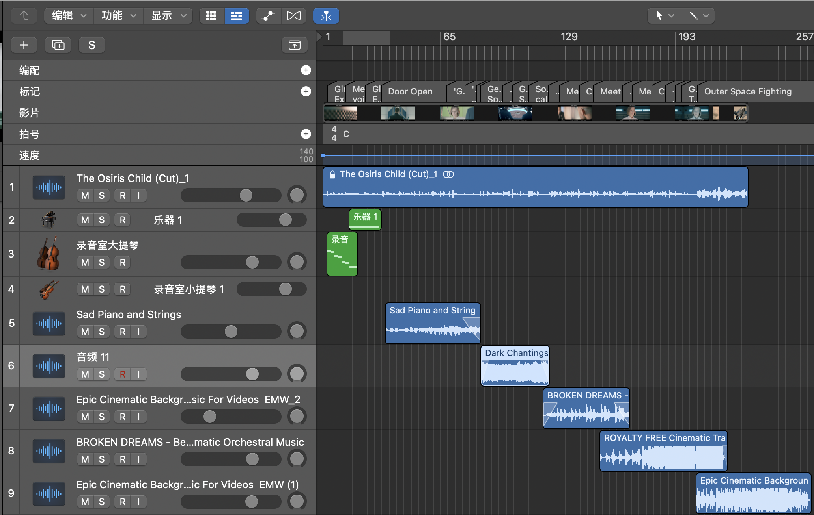
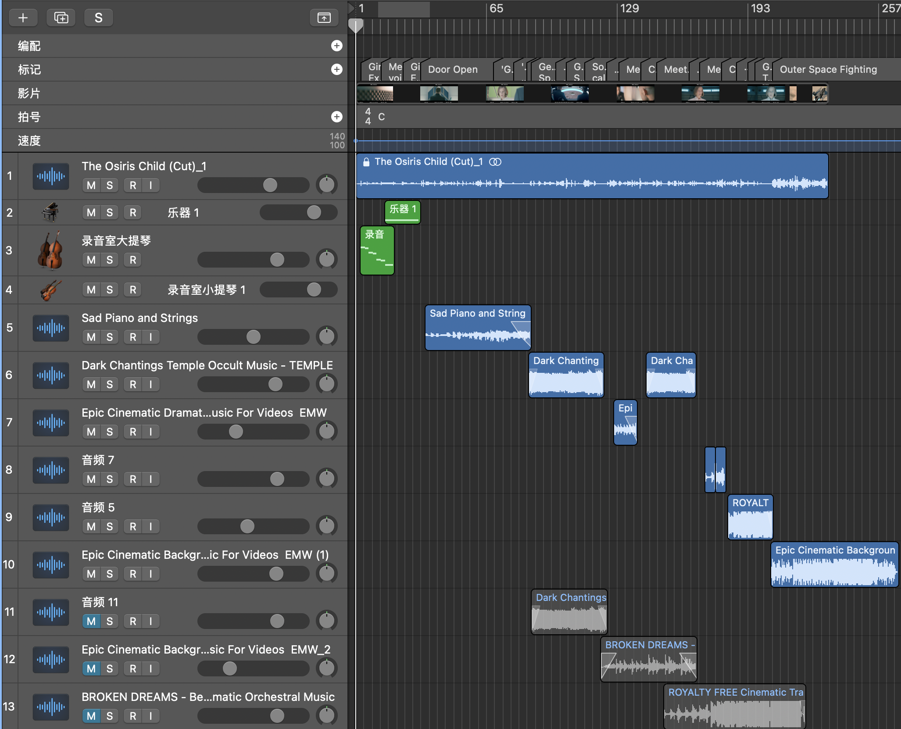

Week 10
Making Music for Film and Animation 1 - Week 10 Log Book

Lecture Content and Reflection
The Empire Strikes Back (2006)
- Mystery music is played with quick-tempo wind instruments in outer space. Lead the audience into the new film world.
- When the monster drags the man, an ascending melody plays to create tension.
- Darth Vader’s Theme Explained
- Use a March in order to represent the power of the Empire and Imperial Navy.
- The first beat is crochet, but triplet in beats 2-4. Make the rhythm feel in a compound meter (12/8) instead of a simple duple (4/4).
- Can be tracked back to another well-known classic music piece (Friedrich, Chopin’s Funeral March, third movement of second piano Sonata).
- Both pieces have repetitive chord progression alternating between the minor tonic chord and the major sixth chord.
- A major triad in the motif theme hitting just below the surface of the powerful music -> shows the anger and darkness.
Blade Runner (1982)
- The synchronized sounds create an ethereal feeling in the opening scene (space).
- This film cut clearly demonstrates that synchronization is better than traditional instruments in creating a sense of atmosphere since it has more layers and sustained sound.
- Synthesizers - sound of the future (you can make sounds using synthesizers that you are unable to get from the natural world).
- The beauty of electronic instruments is that you can create sounds or a world you haven’t heard before.
The Matrix (1999)
- Lots of sliding-up sound effects to make the audience feel nervous. Use fast string and wind to create tension.
- Usually use a sustain note in the beginning and end for transition.
- The movement of music follows the character’s actions closely and sketches their internal emotion (Physical and Psychological drama).
- Use a mix of synchronized sounds and traditional instruments.
Scoring what’s on-screen vs Scoring ‘The Big Picture’
- 4 functions learned before are used to underscore the scene or a moment.
- Scoring ‘The Big Picture’
- Bringing a new perspective to a scene rather than reinforcing what’s showing on the screen
- Making the audience think differently
- Music is giving the feeling of the thing the audience is not aware of
- Music becomes another character, giving an additional dimensional view

Major Project
Opening
- The opening has a calm emotion with the girl's gentally narrative. I would like to have some simple sustain notes gradually fades in. It is pretty hard to find the suitable track, so I decide to use MIDI keyboard write a track.
- After choose in the instrument library in Logic Pro, I decided to use a cello to begin. The cello takes the mid-low part in string family. It is the best choice for some low, warm and sustain notes.
- I used the 'LAUNCH Key 81' MIDI key board to record the track. I just need to choose the MIDI instument and simply press record, the note I play in the keyboard would be write into the Logic Pro.
- I have decided to use the 'Saddness piano and string' when the general and colonel. I find out that track use F major, so I also choose to use F major here. I played some pairs of semitones to create a mystery feeling. Although here the girl is talking in a calm tone, the music is try to score the big picture that force the audience to guess and expect what will happen at back.
- I then have a piano start play broken chords of F Maj7 and F sus2 start at 00:42:12.
The string track
The piano track
Insert edit tracks
- According to the development of the cut scene, I breify insert the tracks I found from last week in. 
- By watching the cut few times with the music currently, the biggest problem is that it contain too much of the music. None of the slience is used here, it did not give the audience any rest time. Therefore, I start to cut little pieces out from the track. Try to line up all the hit points and create some sense of slience. 